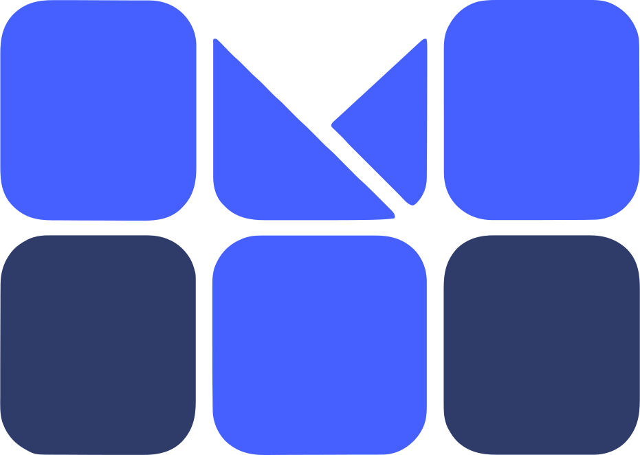

<!doctype html>
<html>
<head>
<meta charset="utf-8">
<title>Clarté posts</title>
<link rel="stylesheet" href="clarte.css">
</head>
<body>
<div id="post"></div>
<script>
const NB = '\u202F'; // narrow no-break space: the app's own digit groups and French punctuation
const NBH = '\u00A0'; // no-break space: digit groups at headline size, where a narrow one vanishes
const Q = new URLSearchParams(location.search);
const L = Q.get('l') || 'fr';
const P = Q.get('p') || 'fait';
const AR = L === 'ar';
const t = (o) => (typeof o === 'string' ? o : o[L]);

const ICON = {
  phone: '<svg viewBox="0 0 24 24" fill="none" stroke="currentColor" stroke-width="2" stroke-linecap="round" stroke-linejoin="round"><path d="M22 16.92v3a2 2 0 0 1-2.18 2 19.8 19.8 0 0 1-8.63-3.07 19.5 19.5 0 0 1-6-6A19.8 19.8 0 0 1 2.1 4.18 2 2 0 0 1 4.1 2h3a2 2 0 0 1 2 1.72c.13.96.36 1.9.7 2.81a2 2 0 0 1-.45 2.11L8.1 9.9a16 16 0 0 0 6 6l1.27-1.27a2 2 0 0 1 2.11-.45c.9.34 1.85.57 2.81.7A2 2 0 0 1 22 16.92z"/></svg>',
  check: '<svg width="30" height="30" viewBox="0 0 24 24" fill="none" stroke="#16783B" stroke-width="2.6" stroke-linecap="round" stroke-linejoin="round"><path d="M20 6 9 17l-5-5"/></svg>',
  chevron: '<svg width="26" height="26" viewBox="0 0 24 24" fill="none" stroke="#fff" stroke-width="2.6" stroke-linecap="round" stroke-linejoin="round"><path d="m9 18 6-6-6-6"/></svg>',
};

const C = {
  tag: {
    direction: { fr: 'Pour la direction', ar: 'للإدارة' },
    parents: { fr: 'Pour les parents', ar: 'لأولياء الأمور' },
    teachers: { fr: 'Pour les enseignants', ar: 'للمعلّمين' },
    finance: { fr: 'Pour la comptabilité', ar: 'للمحاسبة' },
  },
  demo: { fr: 'Démo gratuite', ar: 'عرض توضيحي مجاني' },
  demoSchool: { fr: 'Démo gratuite pour votre école', ar: 'عرض توضيحي مجاني لمدرستكم' },
  notYet: { fr: `Votre école n’est pas encore sur MauriSchool${NB}?`, ar: 'مدرستكم ليست على MauriSchool بعد؟' },
  ways: { fr: 'Appel ou WhatsApp', ar: 'اتصال أو واتساب' },
  url: 'maurischool.com',
  number: '33 08 25 42',
};

// ---------- building blocks ----------
const lockup = (dark) => dark
  ? `<div class="cl-lockup"><div class="cl-lockup__tile"></div><span class="cl-lockup__word">MauriSchool</span></div>`
  : `<div class="cl-lockup"><span class="cl-lockup__word"><span class="m">Mauri</span><span class="s">School</span></span></div>`;
const head = (tag, dark) => `<header class="cl-head">${lockup(dark)}<span class="cl-tag">${t(tag)}</span></header>`;
const headSable = (tag) => `<header class="cl-head"><div class="cl-lockup"><div class="cl-lockup__tile"></div><span class="cl-lockup__word">MauriSchool</span></div><span class="cl-tag">${t(tag)}</span></header>`;
const headline = (fact, outcome, cls = '') => `<h1 class="cl-headline ${cls}"><span class="fact">${t(fact)}</span>${outcome ? `<span class="outcome">${t(outcome)}</span>` : ''}</h1>`;
const cachet = (label, style, size = '') => `<div class="cl-cachet ${size}" style="${style}">
  <div class="cl-cachet__label">${ICON.phone}<span>${t(label)}</span></div>
  <div class="cl-cachet__num">${C.number}</div>
  <div class="cl-cachet__ways">${t(C.ways)}</div></div>`;
const url = (style = '') => `<div class="cl-url" style="${AR ? 'right' : 'left'}:72px;${style}">${C.url}</div>`;
const steps = (n, style) => `<div class="cl-steps" style="${style}">${[1, 2, 3].map((i) => `<div class="cl-step ${i === n ? 'on' : i < n ? 'done' : ''}">${i}</div>`).join('')}</div>`;
const cast = (who, style) => ``;
const doc = (file, style) => `<div class="cl-doc" style="${style}"></div>`;
const slot = (file, round) => `<span class="cl-slot${round ? ' round' : ''}"></span>`;

// The status bar of the video kit's Device (time, signal, wifi, battery), at 10:24; offline = empty bars and a cross, as Device.tsx draws it.
const STATUS = (offline) => '<span>10:24</span><svg width="96" height="22" viewBox="0 0 96 22">'
  + [0, 1, 2, 3].map((i) => `<rect x="${i * 7}" y="${16 - i * 4}" width="5" height="${6 + i * 4}" rx="1.5" fill="#111827" fill-opacity="${offline ? 0.28 : 1}"/>`).join('')
  + (offline ? '<path d="M36 5 l9 9 M45 5 l-9 9" stroke="#111827" stroke-width="2.6" stroke-linecap="round"/>'
    : '<path d="M44 18 l4 -4 a6 6 0 0 0 -8 0z" fill="#111827"/><path d="M36.5 10.5 a11 11 0 0 1 15 0 l-2.2 2.2 a8 8 0 0 0 -10.6 0z" fill="#111827"/><path d="M33 7 a16 16 0 0 1 22 0 l-2.2 2.2 a13 13 0 0 0 -17.6 0z" fill="#111827"/>')
  + '<rect x="62" y="4" width="28" height="14" rx="4" fill="none" stroke="#111827" stroke-opacity="0.45" stroke-width="2"/><rect x="65" y="7" width="22" height="8" rx="2" fill="#111827"/><rect x="91.5" y="8.5" width="2.5" height="5" rx="1" fill="#111827" fill-opacity="0.45"/></svg>';

// A real 1.0.8 capture (1290 px wide, 430 pt at 3x) in the phone. `w` is the phone's width on the canvas.
const device = (shot, style, w = 500, offline = false) => `<div class="cl-device-wrap" style="--w:${w}px;${style}"><div class="cl-device" style="zoom:${(w / 613).toFixed(4)}"><div class="cl-device__screen">
  <div class="cl-device__bar">${STATUS(offline)}</div>
  <div class="cl-device__cam"></div><div class="cl-device__glare"></div></div></div></div>`;

// La Loupe: a box of a real capture or document [x0, y0, x1, y1] in source pixels, shown `w` wide.
const SRC_W = { cap: 1290, receipt: 1282 };
const loupe = (src, box, w, style, kind = 'cap') => { const [x0, y0, x1, y1] = box; const k = w / (x1 - x0);
  return `<div class="cl-loupe" style="width:${w}px;height:${Math.round((y1 - y0) * k)}px;${style}"></div>`; };
const CROP = {
  adminTodo: { fr: [40, 1003, 1250, 1192], ar: [40, 355, 1250, 703] },   // FR: the "Appel non fait" row; AR: the today card (the AR row has a bidi bug)
  recordPayment: { fr: [40, 845, 1250, 996], ar: [40, 827, 1250, 978] },
  bulletinRow: { fr: [40, 220, 1250, 562], ar: [40, 220, 1250, 556] },
  paymentRow: { fr: [40, 577, 1250, 919], ar: [40, 571, 1250, 907] },
  receiptCard: { fr: [40, 892, 1250, 1291], ar: [40, 892, 1250, 1288] },
  receiptSeal: { fr: [690, 905, 1190, 1162], ar: [690, 905, 1190, 1162] },  // the template keeps the cachet box at the right in both languages
};
const capLoupe = (shot, crop, w, style) => loupe(`img/cap/app-${shot}-${L}.png`, CROP[crop][L], w, style);

const ICON_ROW = {
  finance: '<svg viewBox="0 0 24 24" fill="none" stroke="currentColor" stroke-width="2" stroke-linejoin="round"><rect x="2.5" y="5" width="19" height="14" rx="2.5"/><path d="M2.5 10h19" /><path d="M6 15h4" stroke-linecap="round"/></svg>',
  grade: '<svg viewBox="0 0 24 24" fill="currentColor"><path d="M12 3 1 9l11 6 9-4.9V17h2V9L12 3zm-6.8 9.5v3.6L12 19l6.8-2.9v-3.6L12 15.5l-6.8-3z"/></svg>',
};
// The in-app notification row, words from the 1.0.8 app (mobile notifications.json + the balance line).
const inrow = ({ kind, title, msg, time }, style, w = 520) => `<div class="cl-inrow is-${kind}" style="width:${w}px;--bar:${Math.max(4, Math.round(w * 4 / 398))}px;${style}"><div class="cl-inrow__tile">${ICON_ROW[kind]}</div>
  <div><div class="cl-inrow__title"><span>${t(title)}</span><i></i></div><div class="cl-inrow__msg">${t(msg)}</div><div class="cl-inrow__time"><span class="ltr">${time}</span></div></div></div>`;
const LTR = (x) => `<span class="ltr">${x}</span>`;
const PAY = (amount, amountAr, receipt, time) => ({ kind: 'finance', time,
  title: { fr: 'Paiement enregistré — Sidi Ould Mocktar', ar: 'تم تسجيل الدفع — سيدي ولد المختار' },
  msg: { fr: `${amount} MRU ont été enregistrés. Le reçu <span class="nw">${receipt}</span> est disponible. Aucune action requise. Reste à payer${NB}: 0 MRU.`,
         ar: `تمّ تسجيل ${LTR(amountAr)} أوقية. الوصل ${LTR(receipt)} متاح. لا يتطلّب أيّ إجراء. المتبقي للدفع: ${LTR('0')} أوقية.` } });


// A moment: a drawn scene from the video kit as the canvas, the headline on its plain wall, the stamp on the desk.
const moment = (scene, surface, tag, fact, outcome, stampSide = 'end') => ({ surface, html: `
    
    ${head(tag, surface === 'night')}
    <div class="abs" style="top:196px; inset-inline:72px;">
      ${headline(fact, outcome, 'md')}
    </div>
    ${cachet(C.demo, `inset-inline-${stampSide}:56px; bottom:44px;`, 'mini')}
  ` });

// ---------- the posts ----------
const POSTS = {
  // T1 · Le Fait — direction, on paper. Real 1.0.8 director home at 10:24; the loupe lifts the line the headline is about.
  fait: () => ({ surface: 'paper', html: `
    ${head(C.tag.direction)}
    <div class="abs" style="top:200px; inset-inline:72px;">
      ${headline({ fr: 'Deux classes n’ont pas fait l’appel.', ar: 'قسمان بلا نداء هذا الصباح.' }, { fr: 'Vous le savez sans demander.', ar: 'وأنتم تعرفون دون أن تسألوا.' }, 'md')}
    </div>
    <div class="cl-socle" style="inset-inline-end:-180px; top:${AR ? 980 : 900}px; width:780px; height:720px;"></div>
    ${device('admin-home', `inset-inline-end:40px; top:${AR ? 900 : 780}px;`)}
    ${capLoupe('admin-home', 'adminTodo', 960, `inset-inline-start:60px; top:${AR ? 530 : 580}px;`)}
    ${cachet(C.demo, `inset-inline-start:60px; top:${AR ? 940 : 820}px;`)}
    ${url()}
  ` }),

  // T2 · La Notification — parents, on blue. The real inbox row of Zahra's bulletin, and Papa, whose phone just buzzed.
  notif: () => ({ surface: 'blue', grain: true, html: `
    ${head(C.tag.parents, true)}
    <div class="abs" style="top:200px; inset-inline:72px;">
      ${headline({ fr: 'Le bulletin ne passe plus par le cartable.', ar: 'كشف النقاط لم يعد يمرّ عبر الحقيبة.' }, { fr: 'Il arrive chez vous.', ar: 'يصلكم مباشرة.' }, 'md')}
    </div>
    <div class="cl-socle" style="inset-inline-start:-160px; top:960px; width:700px; height:600px;"></div>
    ${capLoupe('parent-notifications', 'bulletinRow', 960, 'inset-inline-start:60px; top:500px;')}
    ${cast('father', 'inset-inline-start:30px; top:700px; width:440px;')}
    ${cachet(C.notYet, 'inset-inline-end:60px; top:1060px;', 'mini')}
  ` }),

  // T3 · La Scène — the Reel's world (7 500 MRU, receipt 0412), on sable. The goat never mirrors.
  scene: () => ({ surface: 'sable', grain: true, html: `
    <div class="abs" style="left:0; right:0; bottom:0; height:250px; background:linear-gradient(180deg, #E3C590 0%, var(--sable-ground) 40%);"></div>
    ${headSable(C.tag.parents)}
    <div class="abs" style="top:200px; inset-inline:72px;">
      ${headline({ fr: 'Elle a mangé le reçu.', ar: 'العنز أكلت الوصل.' }, { fr: 'Pas la preuve.', ar: 'والإثبات باقٍ.' }, 'lg')}
    </div>
    
    ${inrow(PAY(`7${NB}500`, '7500', 'RCP-2026-000412', '10:24'), 'right:44px; top:500px; transform:rotate(1.5deg);', 540)}
    ${cachet(C.notYet, 'right:60px; bottom:84px;', 'mini')}
  ` }),

  // T4 · L'Outil — teachers, on night. The real register opened in class, then the network cut: the app's own offline band.
  outil: () => ({ surface: 'night', grain: true, html: `
    ${head(C.tag.teachers, true)}
    <div class="abs" style="top:200px; inset-inline:72px;">
      ${headline({ fr: `Pas de réseau en classe${NB}?`, ar: 'لا شبكة في القسم؟' }, { fr: 'L’appel s’enregistre quand même.', ar: 'النداء يُحفظ رغم ذلك.' }, 'md')}
    </div>
    <div class="cl-socle" style="inset-inline-end:-180px; top:${AR ? 720 : 780}px; width:740px; height:760px;"></div>
    ${device('teacher-register-offline', `inset-inline-end:40px; top:${AR ? 480 : 560}px;`, 500, true)}
    <div class="cl-toast" style="inset-inline-start:56px; top:${AR ? 520 : 600}px; width:500px;">
      <div class="cl-toast__check">${ICON.check}</div>
      <div><div class="cl-toast__title">${t({ fr: 'Enregistré sur l’appareil', ar: 'تم حفظ الحضور على الجهاز' })}</div>
      <div class="cl-toast__msg">${t({ fr: 'La synchronisation se fera automatiquement au retour de la connexion.', ar: 'ستتم مزامنته تلقائياً عند عودة الاتصال.' })}</div></div>
    </div>
    ${cachet(C.demo, `inset-inline-start:60px; top:${AR ? 880 : 960}px;`)}
    ${url('color:#C7D2FE;')}
  ` }),

  // T5 · Le Document — direction, on night. The word is written; the school's own cachet, lifted from its real receipt, is the proof.
  docs: () => ({ surface: 'night', grain: true, html: `
    ${head(C.tag.direction, true)}
    <div class="abs" style="top:200px; inset-inline:72px;">
      ${headline({ fr: 'Le cachet de votre école', ar: 'ختم مدرستكم' }, { fr: 'sur chaque bulletin et chaque reçu.', ar: 'على كل كشف نقاط وكل وصل.' }, 'md')}
    </div>
    <div class="cl-socle" style="inset-inline-end:-160px; top:820px; width:780px; height:700px;"></div>
    ${doc('bulletin.png', `inset-inline-end:48px; top:${AR ? 470 : 540}px; width:520px; transform:rotate(${AR ? -2.5 : 2.5}deg);`)}
    ${loupe(`img/docs/receipt-${L}.png`, CROP.receiptSeal[L], 460, `inset-inline-start:60px; top:${AR ? 520 : 590}px;`, 'receipt')}
    ${cachet(C.demo, `inset-inline-start:60px; top:${AR ? 900 : 960}px;`, 'mini')}
  ` }),

  // T5b · La Phrase — the documents idea at poster scale (story). Taste's "sentence is the layout": the stamp stands where the word would be.
  phrase: () => ({ surface: 'night', format: 'story', grain: true, html: `
    <div class="cl-head" style="top:240px;">${lockup(true)}<span class="cl-tag">${t(C.tag.direction)}</span></div>
    <div class="abs" style="top:400px; inset-inline:72px;">
      <h1 class="cl-headline" style="font-size:${AR ? 128 : 132}px; line-height:${AR ? 1.25 : 1.04};"><span class="fact">${AR ? `${slot('stamp.png', true)} مدرستكم` : `Le ${slot('stamp.png', true)} de votre école.`}</span></h1>
      <p class="cl-lead" style="margin-top:36px; color:var(--periwinkle); font-size:44px;">${t({ fr: 'Sur chaque bulletin et chaque reçu, au nom de l’école.', ar: 'على كل كشف نقاط وكل وصل، باسم المدرسة.' })}</p>
    </div>
    <div class="cl-socle" style="inset-inline-end:-200px; top:1080px; width:820px; height:700px;"></div>
    ${doc('bulletin.png', `inset-inline-end:90px; top:900px; width:520px; transform:rotate(${AR ? -3 : 3}deg);`)}
    ${cachet(C.demoSchool, `inset-inline-start:60px; top:1300px;`, 'mini')}
  ` }),

  // T6 · Le Carrousel — one real payment (Sidi, 2 600 MRU, RCP-2026-000755), cover then three steps.
  c1: () => ({ surface: 'paper', html: `
    ${head(C.tag.finance)}
    <div class="abs" style="top:200px; inset-inline:72px;">
      ${headline({ fr: `2${NBH}600 MRU payés au guichet.`, ar: `${LTR(`2${NBH}600 MRU`)} دُفعت في الشبّاك.` }, { fr: 'Suivez-les jusqu’au téléphone du parent.', ar: 'تابعوها حتى هاتف وليّ الأمر.' }, 'lg')}
    </div>
    <div class="cl-socle" style="inset-inline-end:-180px; top:820px; width:820px; height:700px;"></div>
    ${cast('accountant', 'inset-inline-end:10px; top:560px; width:620px;')}
    ${cachet(C.demo, `inset-inline-start:60px; top:${AR ? 800 : 760}px;`, 'mini')}
    <div class="cl-swipe" style="${AR ? 'right' : 'left'}:72px;"><span dir="auto">${t({ fr: 'Trois écrans', ar: 'ثلاث شاشات' })}</span><i>${ICON.chevron}</i></div>
  ` }),
  c2: () => ({ surface: 'paper', html: `
    ${head(C.tag.finance)}
    ${steps(1, 'top:196px; inset-inline-start:72px;')}
    <div class="abs" style="top:300px; inset-inline:72px;">
      ${headline({ fr: 'Le comptable l’enregistre.', ar: 'المحاسب يسجّلها.' }, null, 'sm')}
    </div>
    ${capLoupe('admin-finance', 'recordPayment', 960, 'inset-inline-start:60px; top:430px;')}
    <p class="cl-lead abs" style="top:620px; inset-inline-start:72px; width:420px;">${t({ fr: 'Le reçu est créé au même instant, à son numéro.', ar: 'ويُنشأ الوصل في اللحظة نفسها، برقمه.' })}</p>
    <div class="cl-socle" style="inset-inline-end:-180px; top:960px; width:740px; height:760px;"></div>
    ${device('admin-finance', 'inset-inline-end:40px; top:790px;')}
    ${cachet(C.demo, 'inset-inline-start:60px; top:960px;', 'mini')}
  ` }),
  c3: () => ({ surface: 'paper', html: `
    ${head(C.tag.finance)}
    ${steps(2, 'top:196px; inset-inline-start:72px;')}
    <div class="abs" style="top:300px; inset-inline:72px;">
      ${headline({ fr: 'Le parent est prévenu,', ar: 'وليّ الأمر يُبلَّغ،' }, { fr: 'reçu compris.', ar: 'والوصل معه.' }, 'sm')}
    </div>
    ${capLoupe('parent-notifications', 'paymentRow', 960, 'inset-inline-start:60px; top:500px;')}
    <div class="cl-socle" style="inset-inline-end:-180px; top:980px; width:780px; height:600px;"></div>
    ${cast('father', 'inset-inline-end:40px; top:690px; width:460px;')}
    ${cachet(C.demo, 'inset-inline-start:60px; top:1000px;', 'mini')}
  ` }),
  c4: () => ({ surface: 'paper', html: `
    ${head(C.tag.finance)}
    ${steps(3, 'top:196px; inset-inline-start:72px;')}
    <div class="abs" style="top:300px; inset-inline:72px;">
      ${headline({ fr: 'Le reçu est dans l’app.', ar: 'الوصل في التطبيق.' }, { fr: 'Il ne se perd plus.', ar: 'ولا يضيع بعد اليوم.' }, 'sm')}
    </div>
    ${capLoupe('parent-fees', 'receiptCard', 960, 'inset-inline-start:60px; top:500px;')}
    <div class="cl-socle" style="inset-inline-end:-180px; top:1000px; width:740px; height:600px;"></div>
    ${doc(`receipt-${L}.png`, `inset-inline-end:60px; top:880px; width:400px; transform:rotate(${AR ? -3 : 3}deg);`)}
    ${cachet(C.demo, 'inset-inline-start:60px; top:920px;', 'mini')}
  ` }),

  // T8 · Le Moment — the cast at work, drawn in the video kit (src/shared/moments), before and after.
  // The illustration is the whole canvas; its top is plain wall for the headline. Two slides per role.
  m1: () => moment('director-before', 'paper', C.tag.direction,
    { fr: '10:24, et il appelle encore les classes.', ar: `الساعة ${LTR('10:24')}، وما${NBH}زال يتصل بالأقسام.` },
    { fr: 'Pour savoir qui est absent.', ar: 'ليعرف من غاب اليوم.' }),
  m2: () => moment('director-after', 'paper', C.tag.direction,
    { fr: '10:24, il sait déjà qui est absent.', ar: `الساعة ${LTR('10:24')}، وقد عرف من غاب.` },
    { fr: 'Et son thé est encore chaud.', ar: 'وشايُه ما زال ساخنًا.' }),
  t1: () => moment('teacher-before', 'night', C.tag.teachers,
    { fr: '23:40, elle recopie encore l’appel.', ar: `الساعة ${LTR('23:40')}، وما${NBH}زالت تنسخ النداء.` },
    { fr: 'Celui fait en classe ce matin.', ar: 'نداءٌ أجرته في القسم صباحًا.' }),
  t2: () => moment('teacher-after', 'paper', C.tag.teachers,
    { fr: `Pas de réseau en classe${NB}?`, ar: 'لا شبكة في القسم؟' },
    { fr: 'L’appel est fait. Le soir est libre.', ar: 'النداء تمّ، والمساء لها.' }, 'start'),

  // T7 · La Carte — the contact story, on night
  carte: () => ({ surface: 'night', format: 'story', grain: true, html: `
    <div class="cl-socle" style="left:-180px; top:-260px; width:620px; height:620px; border-radius:120px;"></div>
    <div class="cl-socle" style="right:-200px; bottom:-200px; width:640px; height:640px; border-radius:120px;"></div>
    <div class="abs" style="top:420px; left:0; right:0; display:grid; justify-items:center; text-align:center; gap:34px;">
      <div class="cl-lockup__tile" style="width:220px; height:220px; border-radius:52px;"></div>
      <div class="cl-lockup__word" style="font-size:104px; color:#fff; letter-spacing:-.03em;">MauriSchool</div>
      <p class="cl-lead" style="color:var(--periwinkle); font-size:44px; margin:-10px 0 0;">${t({ fr: 'La gestion scolaire, en toute clarté.', ar: 'إدارة مدرسية بكل وضوح.' })}</p>
    </div>
    ${cachet(C.demoSchool, 'left:50%; top:1000px; translate:-50% 0;', 'xl')}
    <p class="cl-lead abs" style="top:1370px; left:0; right:0; text-align:center; color:#fff; font-size:38px; font-weight:600;">${t({ fr: "Sur Google Play et l’App Store", ar: "على Google Play وApp Store" })}</p>
    <div class="abs" style="top:1450px; left:0; right:0; text-align:center; font-size:32px; font-weight:500; color:#C7D2FE; direction:ltr; line-height:1.5;">maurischool.com<br>contact@maurischool.com</div>
  ` }),
};

const def = POSTS[P]();
const el = document.getElementById('post');
el.className = `cl-canvas is-${def.surface}`;
el.dataset.format = def.format || 'post';
el.setAttribute('dir', AR ? 'rtl' : 'ltr');
el.setAttribute('lang', L);
el.innerHTML = def.html + (def.grain ? '<div class="cl-grain"></div>' : '');
document.fonts.ready.then(() => { document.body.dataset.ready = '1'; });
</script>
</body>
</html>
